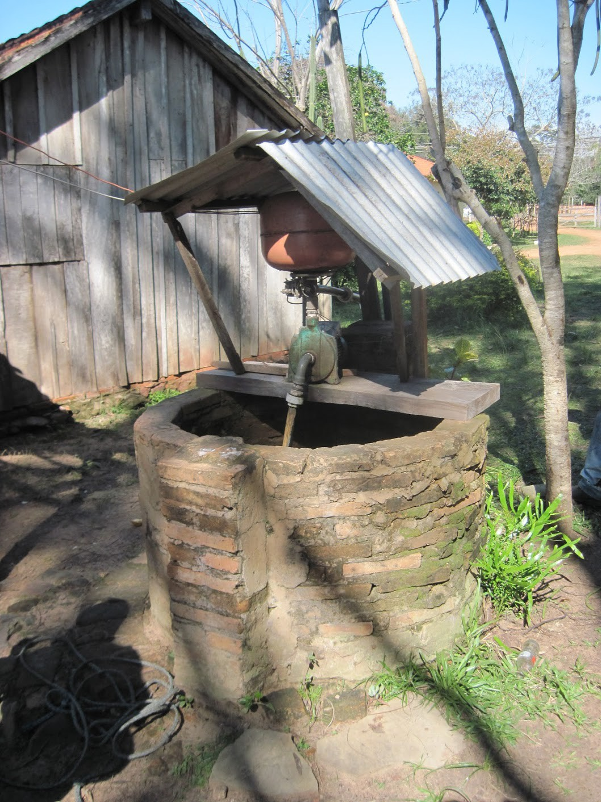
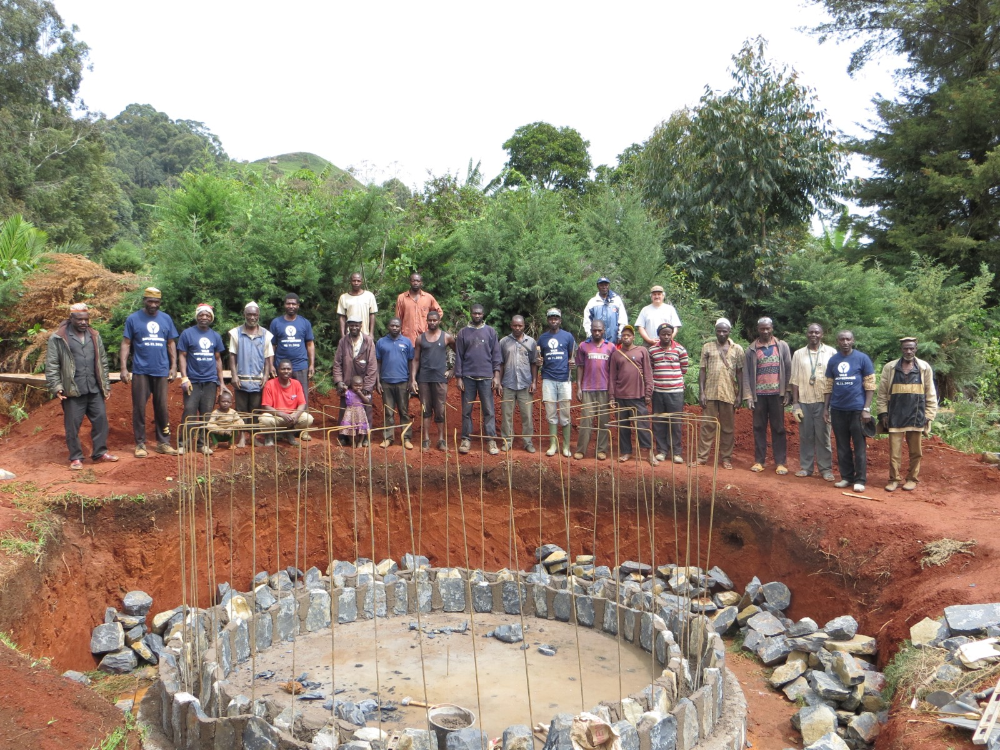
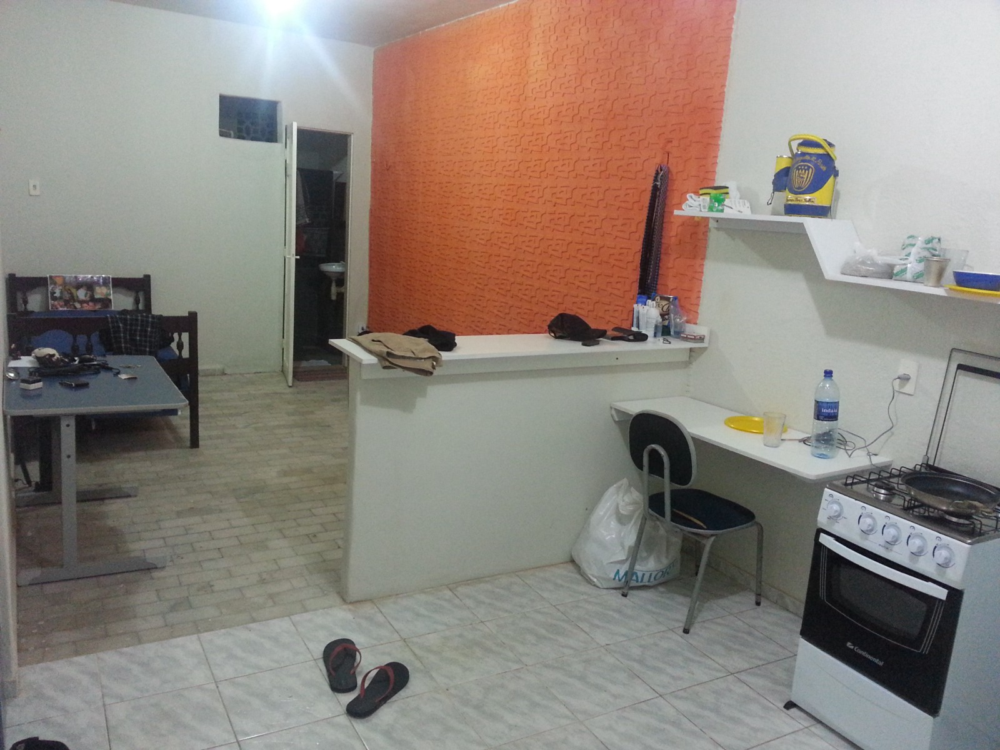
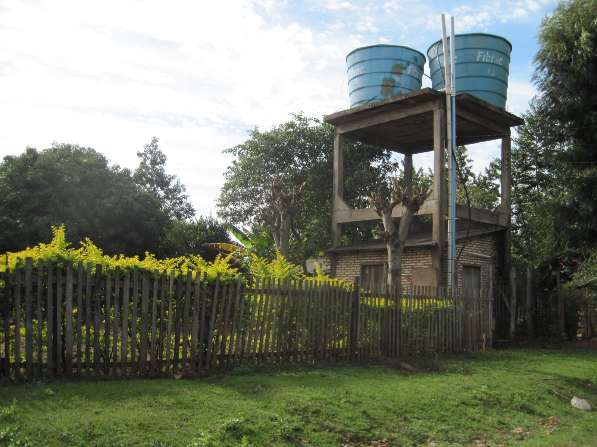

Quality Has to Count in Water Access
Posted on Tue 29 March 2016 in water-climate-risk
Earlier today, I came across an excellent National Geographic infographic showing the proportion of people in various countries and regions of the world lacking access to clean drinking water over time. The graphic was well-designed, and I felt appropriately optimistic at the declining rates and frustrated by the continued failure to reach 100%. But the numbers didn't seem quite right.
In particular, a quote about halfway down the page caught my eye:
Eight out of ten people without access to clean water live in rural areas. In fact, 84 percent of people in rural areas have safe drinking water, compared with 96 percent in urban areas.
Wait, what? That can’t possibly be true in any meaningful sense. I’ve lived in Asunción, Paraguay and Fortaleza, Brazil — far from the poorest cities in the world — and even there, the [large] portion of the population that can’t afford bottled water or expensive filtration is drinking contaminated water. It’s worse in other cities I’ve visited like Phnom Penh, Addis Ababa, and Douala. While the message here may be true — urban access is probably better than rural access — the numbers are impossibly high. Of course, that’s IF you take “access to clean water” as meaning having a reliable connection to water that is safe to drink.
Unfortunately, that’s not the definition that anyone uses. The WHO, whose definition is adopted by the World Bank, governments, NGOs, and others, defines:
Access to an improved water source refers to the percentage of the population using an improved drinking water source. The improved drinking water source includes piped water on premises (piped household water connection located inside the user’s dwelling, plot or yard), and other improved drinking water sources (public taps or standpipes, tube wells or boreholes, protected dug wells, protected springs, and rainwater collection).
Rather than bore you with lots of text about why that’s not an appropriate definition, I want to share some examples with you.
This well serves a family in rural Paraguay. Since they have “piped water on premises (piped household water connection located inside the user’s dwelling, plot or yard)”, the government of Paraguay and WHO view this family as having access to clean water. However, the well frequently runs dry, and the family who depends on this well has to walk long distances to get water from their neighbors or from a nearby stream. Despite this, they “have access to clean water”
This storage tank in Cameroon (now completed) serves a community of around 1,000. There are about 10 standpipes throughout the community, so no one has to walk too far to a standpipe. The water is generally safe to drink, but is untreated. During prolonged dry spells, the groundwater that feeds the system becomes sporadic, and rationing is necessary; some families draw water from the nearby (heavily contaminated) stream. Since they have a tank, storage pipes, and standpipes, everyone in this community is considered to have “access to clean water”.
I lived in this apartment in Fortaleza, Brazil for 3 months. A wonderful apartment in a great city, but it came with strict orders to never drink the tap water. I bought large bottles of water for about $US2.50 for 10 gallons, which wasn’t a problem for me but is beyond the reach of lots of people in Fortaleza. This is a common scenario in fast-growing cities in the developing world. Since I had tap water delivered to my kitchen, I certainly was among the 96% of urban residents worldwide that the WHO considers have “access to clean water”.
This system in Caaguazu, Paraguay serves a neighborhood of several hundred families. Service is intermittent, and the water quality is poor. However, all of the families have a pipe to their home or nearby, and so they are considered to have “access to clean water.” These are just a handful of examples, but they highlight that the WHO’s definition — which comes down to having access to physical infrastructure — glazes over the spectrum of services that people around the world whose wellbeing metrics like access to clean water are supposed to benefit.
It’s time for a new definition of access to clean water. By 2016, surely we’ve learned that having a pipe or well isn’t enough — people need RELIABLE (not intermittent) access to CLEAN water free of pathogens.
Of course, in the interest of being concise I’ve neglected a lot of the back story. I haven’t told you why access to clean water is so important. I’ll leave to many other articles to explain how clean water is the greatest public health investment of all time, and to tell you vivid stories of how having nearby water saves people (especially women and girls) hours every day. But I hope you buy my takeaway:
In a world of big data, access to clean water ought to be something we can measure better than having a piece of PVC within walking distance.